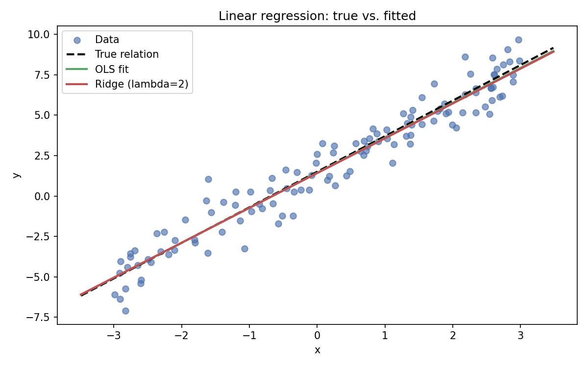
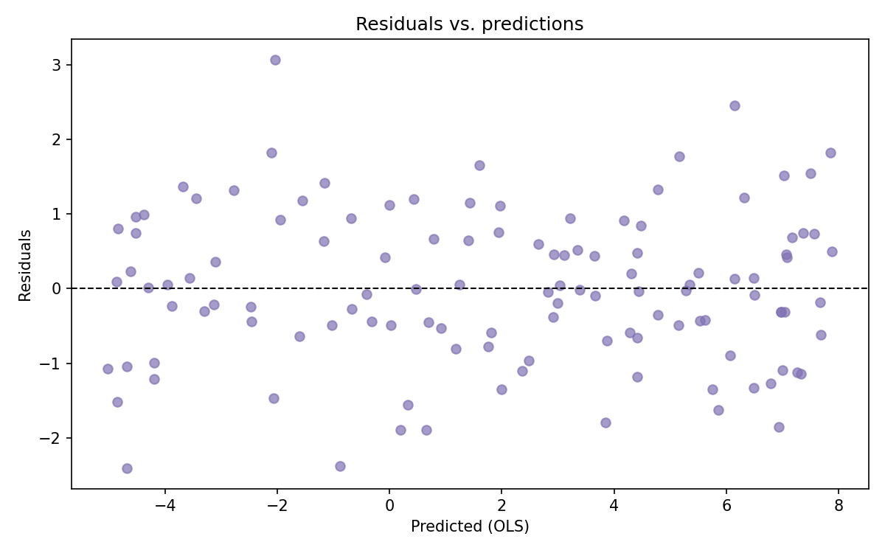
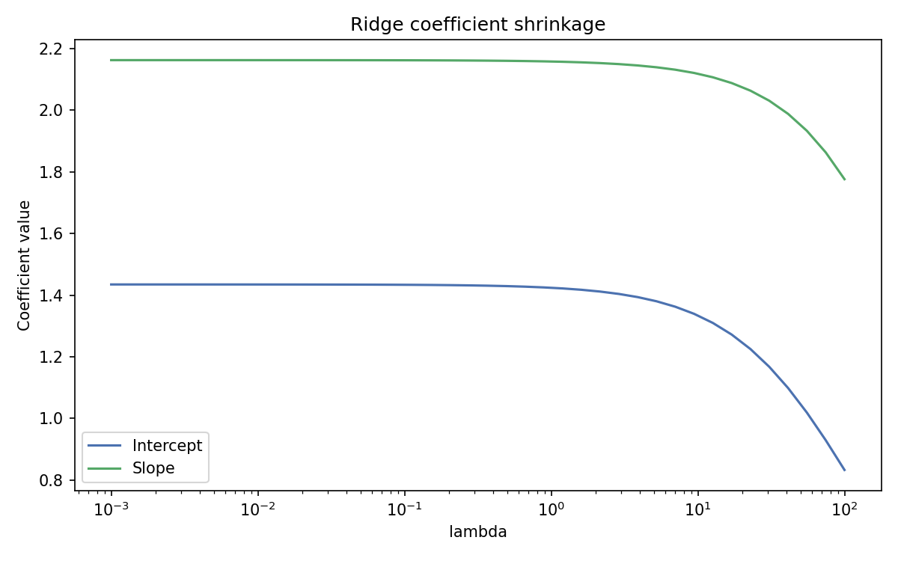

Linear Regression
Core idea
Fit a linear relationship between features and a target: \(y \approx X\beta + \varepsilon\).
Model and loss
Hypothesis: \(\hat{y} = \beta_0 + \sum_{j=1}^p \beta_j x_j\).
Matrix form: \(\hat{\mathbf{y}} = \mathbf{X}\boldsymbol{\beta}\).
Squared loss over \(n\) samples:
\[J(\boldsymbol{\beta}) = \|\mathbf{y} - \mathbf{X}\boldsymbol{\beta}\|_2^2 = (\mathbf{y}-\mathbf{X}\boldsymbol{\beta})^\top (\mathbf{y}-\mathbf{X}\boldsymbol{\beta}).\]
Normal equations (closed form)
Set gradient to zero:
Solution when \(\mathbf{X}^\top\mathbf{X}\) is full rank:
Ridge (L2-regularized) solution
Adds \(\lambda \|\boldsymbol{\beta}\|_2^2\) to discourage large weights:
Gradient descent update
Starting from \(\boldsymbol{\beta}^{(0)}\) and learning rate \(\eta\):
Under the hood: probabilistic view
Assuming i.i.d. Gaussian noise \(\varepsilon \sim \mathcal{N}(0, \sigma^2 I)\):
The ridge solution corresponds to a Gaussian prior \(\boldsymbol{\beta} \sim \mathcal{N}(0, \tau^2 I)\) (MAP estimator).
Diagnostics
\(R^2\) and adjusted \(R^2\).
Residual plots for heteroscedasticity or nonlinearity.
Variance Inflation Factor (VIF) for multicollinearity.
Train/validation split or cross-validation to assess generalization.
NumPy implementation
Below is a minimal NumPy implementation for ordinary least squares and ridge, plus prediction and diagnostics.
import numpy as np
def fit_ols(X, y):
# Adds intercept and solves normal equations
X_ = np.c_[np.ones(len(X)), X]
beta = np.linalg.inv(X_.T @ X_) @ X_.T @ y
return beta
def fit_ridge(X, y, lam=1e-1):
X_ = np.c_[np.ones(len(X)), X]
n_features = X_.shape[1]
beta = np.linalg.inv(X_.T @ X_ + lam * np.eye(n_features)) @ X_.T @ y
return beta
def predict(X, beta):
X_ = np.c_[np.ones(len(X)), X]
return X_ @ beta
def r2_score(y, y_pred):
ss_res = np.sum((y - y_pred) ** 2)
ss_tot = np.sum((y - np.mean(y)) ** 2)
return 1 - ss_res / ss_tot
# Example usage
rng = np.random.default_rng(0)
X = rng.uniform(-2, 2, size=(80, 1))
y = 1.5 + 2.0 * X[:, 0] + rng.normal(scale=0.8, size=80)
beta_ols = fit_ols(X, y)
beta_ridge = fit_ridge(X, y, lam=1.0)
y_hat_ols = predict(X, beta_ols)
print("OLS beta:", beta_ols)
print("Ridge beta:", beta_ridge)
print("R^2 (OLS):", r2_score(y, y_hat_ols))
Visuals
{kind=link}

{kind=link}

{kind=link}

Reproducibility of figures
The figures above are generated by docs/_static_files/codes/linear_regression.py. Run it to refresh images after edits.
python docs/_static_files/codes/linear_regression.py
References and Further Reading
Gauss, C. F. (1809). Theoria Motus Corporum Coelestium. Origin of the least squares method underlying ordinary linear regression.
Seber, G. A. F., & Lee, A. J. (2012). Linear Regression Analysis (2nd ed.). Wiley. Comprehensive treatment of estimation, inference, and diagnostics.
Montgomery, D. C., Peck, E. A., & Vining, G. G. (2012). Introduction to Linear Regression Analysis (5th ed.). Wiley. Applied focus with practical checks and remedial measures.
Hastie, T., Tibshirani, R., & Friedman, J. (2009). The Elements of Statistical Learning (2nd ed.). Springer. Chapters 3–4 cover linear models, regularization, and basis expansions.
Murphy, K. P. (2012). Machine Learning: A Probabilistic Perspective. MIT Press. Section 7.2 frames linear regression in a probabilistic/Bayesian context.